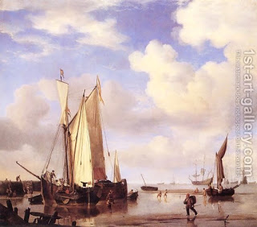

Gittin 8 - What is the difference between a ship and a flower pot?
We saw that a messenger bringing a divorce document (Get) from outside of Israel must confirm that he saw it being written and signed. The Talmud also discusses which neighboring cities and areas are still considered the Land of Israel of this purpose and which are not. Would writing a Get on a ship close to Israel be considered the same as on land?
Finally, is a ship the same as a flower pot? We mean the laws of tithes. Anything that grows on a ship does not directly draw sustenance from the Land of Israel, and anything that grows in a hanging pot does not do this either, so at first glance they should be the same. But maybe this is not so: a ship is constantly moving and thus cannot be considered connected to the ground, but a stable pot can. Or the opposite is true: the air divides between the pot and the earth, so the pot does not draw sustenance from the earth and is not liable to tithes, but a ship is in the water, which can be considered as a continuation of the water bed, and so maybe it is liable to tithes.
Art: Ships Close Inshore at Low Tide by Willem van de, the Younger Velde